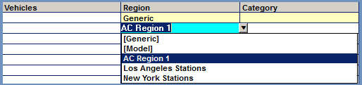

Entering Rotations Using the Copy Grid
Entering copy rotations using the Copy Grid speeds up the copy entry process when there are a large number of regional rotations that must be entered for a single contract as it allows for multiple regional rotation instructions to be entered at the same time for a single rotation header.
Generic, regional, and blackout copy instructions can all be entered using the Copy Grid. Ratios can also be defined. The Copy Grid also allows for region definitions to be created as the rotation is being entered (instead of having to create it first on the Regions screen as described in a previous section of this document).
Another feature of the Copy Grid is that each line that is entered on the Copy Grid is saved as it’s entered, so if the system should shut down during the rotation entry process, when it starts up again, you can continue entering rotations from where it left off.
The Copy Grid also allows for a template grid to be saved for reuse, saving time the next time a similar set of rotation instructions need to be entered.
Rotation Header Entry
The rotation header must be filled out before accessing the Copy Grid area. The procedure for filling out the rotation header when using the Copy Grid is almost identical to the procedure for filling out the rotation header when entering copy rotations one at a time, with the exception that the “Grid” option should be selected from the Region field, which changes the Inventory and Rotation Instructions area to the Copy Grid.
Here is the rotation header entry procedure for using the Copy Grid:
- Select the Advertiser from the advertiser dropdown.
- Select the contract, length, and line type.
- Select the vehicles. (Any highlighted vehicle in the rotation header vehicle dropdown will appear as selectable from the vehicles section of the Copy Grid screen.)
- In the Region field, select Grid. At this point, the Grid screen will appear, replacing the Inventory and Rotation Instructions fields in the lower half of the screen.
- Alter the start and end date and start and end time if necessary, then tab to the Grid area to begin entering the individual rotation instructions on the Grid.
Rotation Instruction Entry
When tabbing past the last field of the Rotation Header, control will automatically go to the “%/Ratio” field in the Copy Grid Inventory area for the first (generic) rotation.
Copy Grid Inventory Menu
The Copy Grid Inventory menu is used to define the copy that will air for the currently selected rotation instruction line by entering a number in the “%/Ratio” field.
The light blue fields (product, creative title, cart, ISCI and exclamation point) fields can be clicked on to sort the inventory by those column headers.
The yellow fields are for information only and cannot be edited and are pulled from the copy inventory.
An exclamation point in the exclamation point column indicates that the copy product does not match the contract product. The inventory can still be used in this case, as the system is simply giving an indication that the two products are different.
The available ISCIs can be filtered by typing text in the ISCI Filter field. Press Backspace to clear the typed in text. The checkbox labeled “Keep records with values” below the ISCI filter field is checked on by default. When this is checked on, if there’s a %/Ratio defined for a piece of copy inventory, and text is entered in the ISCI filter that would filter out that inventory, it will not be filtered out.
Generic Rotation
The first line entered on the Copy Grid should always be the generic rotation. Accordingly, all that needs to be entered for the first line is the percent or ratio for the generic copy by clicking in the “%/Ratio” field for the correct piece of copy inventory and entering a number in the field.
For example, if Cart 001 and 002 should air equally for the generic instructions, enter the number 1 in the %/Ratio field for both pieces of inventory, as shown below.
After entering the %/Ratio for any pieces of inventory that are supposed to air for the generic rotation, exit the Grid Inventory screen by typing a letter key and pressing Tab, or by Tabbing past all of the inventory.
When closing the Grid Inventory screen, the cursor will go to the Comments field, where a Rotation Comment can be entered if needed.
A rotation comment can be entered in the “C” column on the Copy Grid.
After the generic rotation line has been entered, tab to the next line to enter the regional (or blackout) rotation instructions.
Adding Additional Rotation Instructions
When entering rotations using the Grid, the system automatically skips the vehicle field as the system assumes that each rotation is for all the selected vehicles. By default, the vehicles used will be those vehicles highlighted on the rotation header vehicle dropdown.
In the following example, the Generic rotation has already been entered and the Vehicles field has been skipped so that the rotation instructions can be entered for the next line.
Selective Vehicle Entry
If you want to create a rotation for a specific vehicle, go back to the Vehicles field and click or Ctrl-Click on a vehicle to select it for the current rotation instruction line.
In this example, Ctrl-Click was used to select the two vehicles “Gil McDougal Sports” and “Joe DiMaggio Sports”.
This should only be done when you need to create vehicle specific regional rotations.
If you need to create a regional rotation for a vehicle that is not displayed in the Grid Vehicles list box, select the vehicle from the rotation header vehicle list. Ctrl-Click to select more than one vehicle. Only those vehicles that are selected (highlighted) in the rotation header vehicle list will be available to select in the vehicles field on the Grid screen.
Region Entry
The next field to enter is the Region that is to be used for the current line.
There are three ways to enter regions: by selecting a previously created region, by creating a new region from scratch, or by modeling a new region based on a pre-existing region.
Choosing a Predefined Region
Select a previously created region from the Region field by clicking on it in the region dropdown menu.

Press Tab after selecting the region. This will bring up the Region Definition popup menu. Verify the contents of the region then press OK to advance to the next field. (A different region can also be selected on the Region Definition screen by selecting it from the middle section.)
Since this is a predefined region, the category, selection, include/exclude, and format fields on the grid turn yellow and are bypassed, advancing control to the Blackout field.
Creating a New Region
To create a new region on the Grid, type a new Region name in the Region field then press Tab.
Define the region by choosing the Category: DMA Market, MSA Market (if applicable), State Name, Station, or Time Zone.
In this example, the Category of “State Name” has been chosen.
After selecting a Category, tab to the Selection field. The choices in the selection dropdown are specific to the selected Category. For example, when the Category is State, the Selection dropdown shows all states; when the Category is Time Zone, the Selection dropdown lists ETZ, CTZ, etc.
In this example, the State Name Category was chosen, so the states appear in the Selection dropdown, from where they can be selected using Click/Ctrl-Click.
By default, when creating a new region on the grid, the option to include or exclude the station format is defaulted to None so you can quickly build regional rotations. If format definitions are required for the new region, click the toggle to choose include or exclude then select the format.
In this example, this region has been set to Exclude the Top 40 format.
When saving the rotations on the Copy Grid, the region that was just created will also be saved and will be available for selecting in the future either on the Grid or when entering rotations individually.
Modeling a new Region from an existing Region
Modeling a region lets you create a new region based on an existing region from any advertiser, which you can also alter, if needed.
To model a new region, select Model from the Region dropdown.
After selecting Model, press Tab to bring up the Model Region screen. From the box on the left, select the advertiser to model the region from, then select the region to model from the box in the center.
In this example, the region is being modeled from advertiser “Coca-Cola” using the region called “West Coast Stations”. The criteria that make up the selected region is shown in the yellow area on the right.
After selecting the advertiser and region to model from, press the Model button.
Even after modeling a region, it’s still possible to make any changes needed in the Category, Selection, and Format fields.
After saving the rotations on the Copy Grid, this newly modeled region will also be saved and will be available for future use.
Entering Regional Copy
After entering the region information, enter the Inventory to air in the %/Ratio field, then press any non-numeric character to exit the copy inventory area. Tab to the next line to continue entering additional regional rotation instructions. Enter as many regional rotation instructions as needed.
Blackout Copy
Blackout rotations can also be entered on the Copy Grid.
If defining a blackout rotation, after entering the Region (by any of the three methods described above), select the blackout replacement advertiser from the Blackout dropdown.
The blackout advertiser “Target” has been selected from the blackout field in this example.
After selecting the blackout replacement advertiser, tab to the Inventory field, select the copy inventory to air for the blackout advertiser and enter the ratio or number of times it should air. Note that the inventory for the blackout advertiser will be shown in the inventory field when creating a blackout rotation instruction, and that only active inventory (that either has no earliest/latest rotation dates stored with the inventory or that has a latest rotation end date for the inventory after the rotation end date entered in the rotation header) will be displayed.
Blackout rotations will be indicated on the Copy Grid with a black background fill going through the line, as shown below.
Saving Grids
When all the rotation instructions have been entered - including the generic rotation and any regional or blackout rotations that are required - press the Save button to begin the save process.
When saving, the system will ask whether the current grid should also be saved.
To save the grid for future use, enter a name for the grid in the name field and press Yes. (Each grid saved for an advertiser must have a unique name.)
Press No if you want to save the rotation instructions without saving the grid for future use.
Press Cancel to return to the grid screen and continue working without saving.
Creating Rotations from Existing Grids
Any previously saved grids can be used to create new rotations for a contract.
To create a new set of rotation instructions from a previously saved grid:
- Fill out the rotation header by selecting the advertiser, contract, length, etc.
- From the Region field, select Grid.
- Tab to the date field.
- A “Grids” button will appear next to the advertiser name.
- Clicking the Grids button will bring up a list of saved Grids for this advertiser. Select the grid you wish to use. The selected grid will be highlighted in gray.
- At the bottom of the screen there is an “Include Copy” checkbox. When this checkbox is checked, the grid information pulled in will include both regions and associated copy. If you only want to use the regions and not the previously used copy, uncheck the “Include Copy” checkbox.
- Press OK on the Copy Grid Selection screen to populate the Copy Grid with the saved grid information. (Saved grids can also be erased by selecting the saved grid then pressing the Erase button.)
- On the Copy Grid screen, changes can be made if needed to the data that was pulled in from the previously saved grid.
Saving Existing Grids
If you load the Copy Grid with data from a previously saved grid (as described above), at the time of saving, the system will ask whether the current grid should be saved, with the saved grid name appearing in the grid name field.
At this point, the grid can be renamed and saved as a new grid by pressing Yes. Or if the name is left the same as it was, pressing Yes will bring up another popup message that asks whether to replace the existing grid with the new grid information. Pressing Yes on this popup message will replace the previously saved grid information with the new grid information. Pressing No will return you to the previous popup message.
Pressing No on the first popup message will save the rotation instructions without saving the grid. Pressing Cancel will return you to the grid screen without saving.
Grid Buttons
At the bottom of the screen are several grid-related buttons.
Clear
Use the Clear Button to clear data from the screen.
Clicking Clear once will clear the grid contents. Clicking a second time clears the rotation header dates, days and times.
Trash Icon
To remove or “trash” a line on the grid, click on the line and then click the trash can icon in the lower right corner of the screen.
Inventory Entry
The “New Inv” button turns on after you have selected an advertiser. This button can be used to add new inventory when the grid screen is being used (as it covers the other Inventory screen).
Grid Pyramid
When rotations are created using the copy grid, the rotations are numbered following the rules listed below, with generic rotations having the lowest number, and regions that combine format with station call letters having the highest number.
Rotation# Category
1 Generic
2 Time Zone w/o Format
3 State w/o Format
4 DMA Market w/o Format
5 MSA Market w/o Format
6 Station w/o Format
7 Format only
8 Format with Time Zone
9 Format with State
10 Format with DMA Market
11 Format with MSA Market
12 Format with Station
Rotation Vehicle
A Package vehicles
B Hidden vehicles
C Non-package vehicles
D MG vehicles
E Airing
Step Description
1 Sort the Grid by Categories as defined above
2 Sort the selected Vehicles as defined above
3 Loop on sorted vehicles
4 Loop on sorted Grid
5 Add Region if required
6 Add Copy Rotation header
7 Add Copy Instructions
8 Return to 4 until all rows processed
9 Return to 3 until all vehicles processed